Code Deploy
Table of Contents
https://www.youtube.com/@ExamProChannel/search?query=codedeploy
Appspec.yml https://www.youtube.com/watch?v=K6osU51iqMo
codecommit + codebuild + codedeploy(ecs) https://www.youtube.com/watch?v=d7PTjQiahOQ
install codedeply agent in ubuntu
Need to create s3 bucket with .zip file in it
codecommit + codebuild(ecr) + codedeploy(ec2 : docker compose)
Code Deploy
Create CodeDeploy > Application
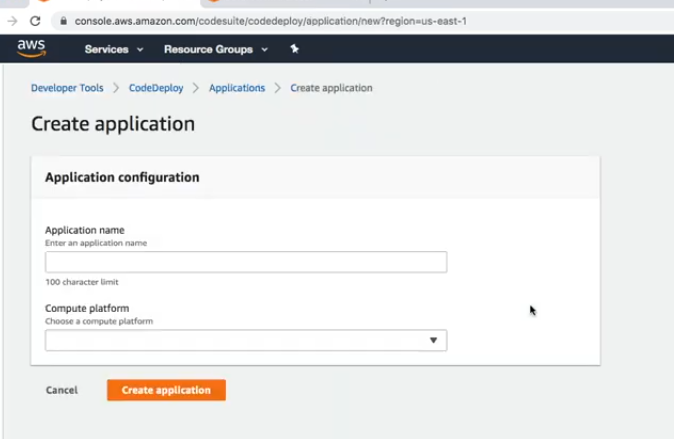
Create a Deployment Group
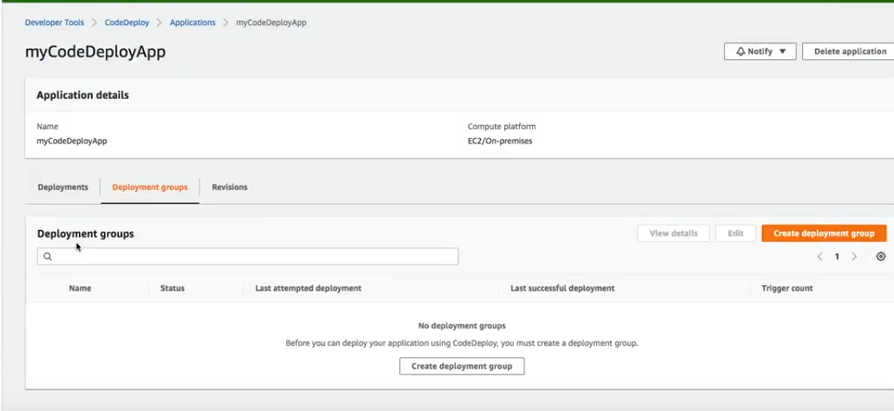
Give name to deployment Group
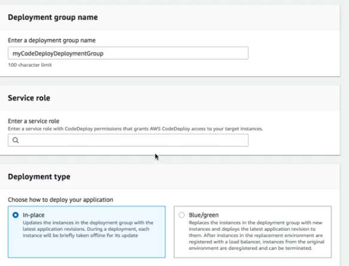
- Give IAM Permission by creating role with polices
For more info https://docs.aws.amazon.com/codedeploy/latest/userguide/getting-started-create-service-role.html
For trusted entiry
To grant access to all supported AWS Regions, save the following content in the file:
{ "Version": "2012-10-17", "Statement": [ { "Sid": "", "Effect": "Allow", "Principal": { "Service": [ "codedeploy.amazonaws.com" ] }, "Action": "sts:AssumeRole" } ] }To grant access to only some supported regions, type the following content into the file, and remove the lines for the regions to which you want to exclude access:
{ "Version": "2012-10-17", "Statement": [ { "Sid": "", "Effect": "Allow", "Principal": { "Service": [ "codedeploy.us-east-2.amazonaws.com", "codedeploy.us-east-1.amazonaws.com", "codedeploy.us-west-1.amazonaws.com", "codedeploy.us-west-2.amazonaws.com", "codedeploy.eu-west-3.amazonaws.com", "codedeploy.ca-central-1.amazonaws.com", "codedeploy.eu-west-1.amazonaws.com", "codedeploy.eu-west-2.amazonaws.com", "codedeploy.eu-central-1.amazonaws.com", "codedeploy.ap-east-1.amazonaws.com", "codedeploy.ap-northeast-1.amazonaws.com", "codedeploy.ap-northeast-2.amazonaws.com", "codedeploy.ap-southeast-1.amazonaws.com", "codedeploy.ap-southeast-2.amazonaws.com", "codedeploy.ap-southeast-4.amazonaws.com", "codedeploy.ap-south-1.amazonaws.com", "codedeploy.sa-east-1.amazonaws.com" ] }, "Action": "sts:AssumeRole" } ] }
- Add iam policy for iam role
For policy :
- AWSCodeDeployRole
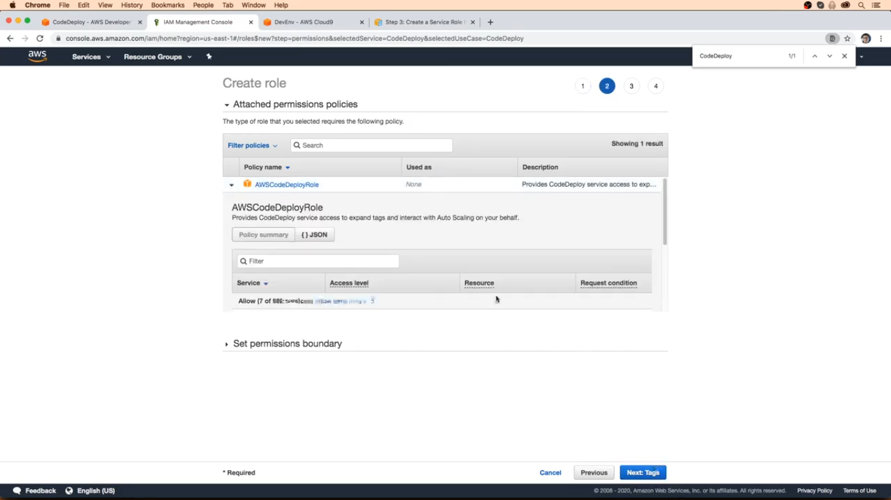
After Creating iam role copy and arn
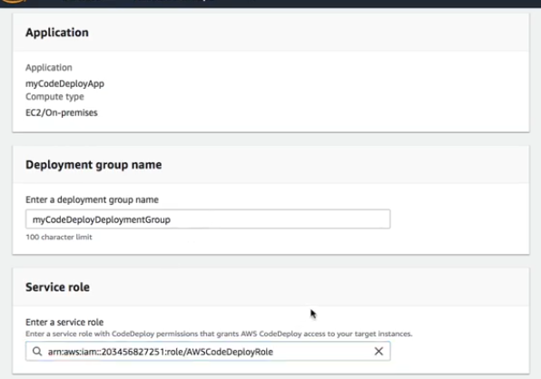 - Deployment Type : In-Place
For Deployment Type Choose In-Place
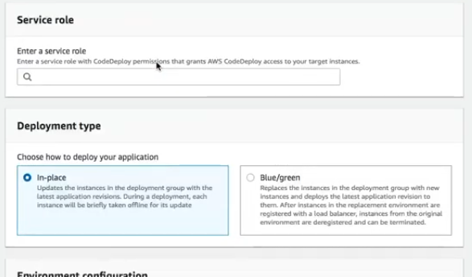 - Environment Configuration
For deployment we chose ec2 instance and
Note
The tag in codedeploy should be same as ec2 instance 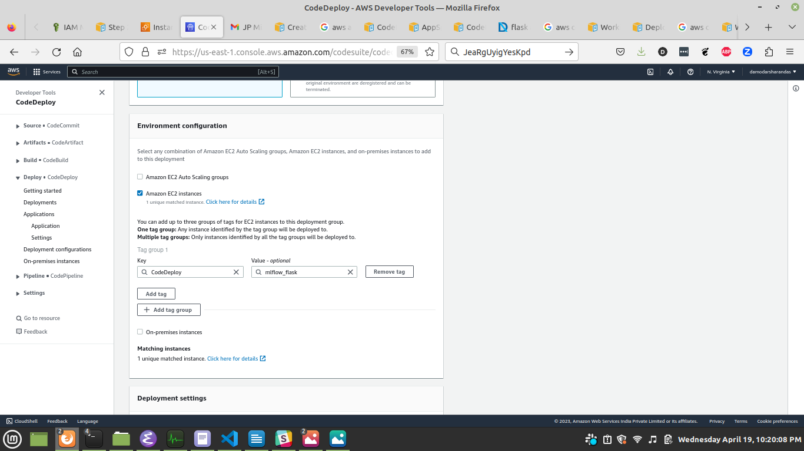 - Deployment Setting and LoadBalance
For Deployment Setting we choose
CodeDeployDefaultAllOne
and Disable Load Balance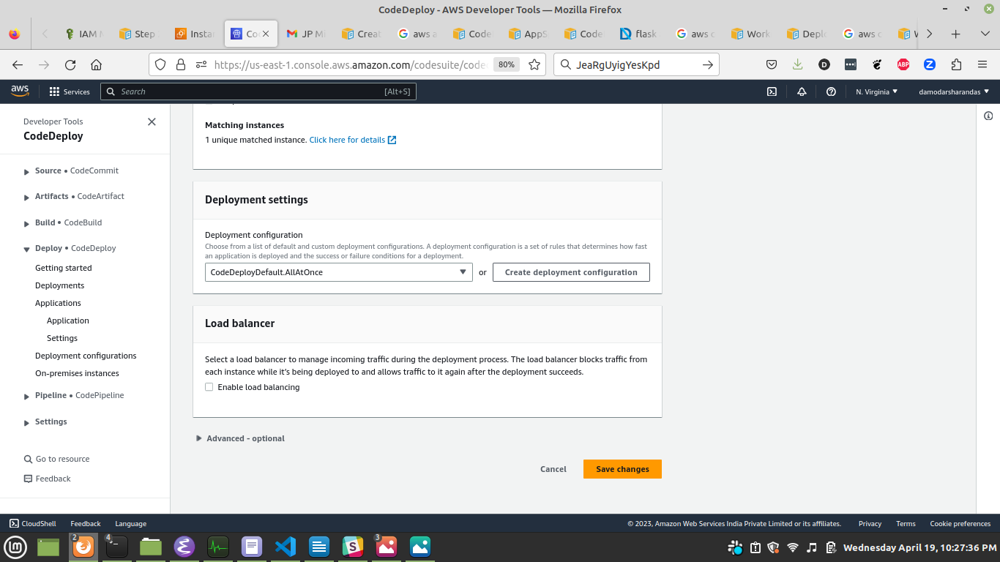
Create iam role for ec2 instance
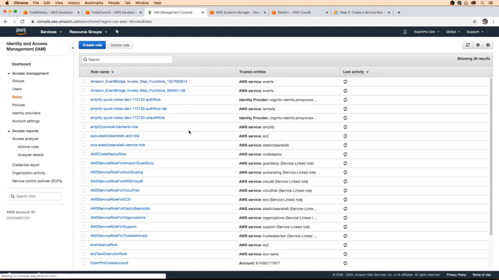 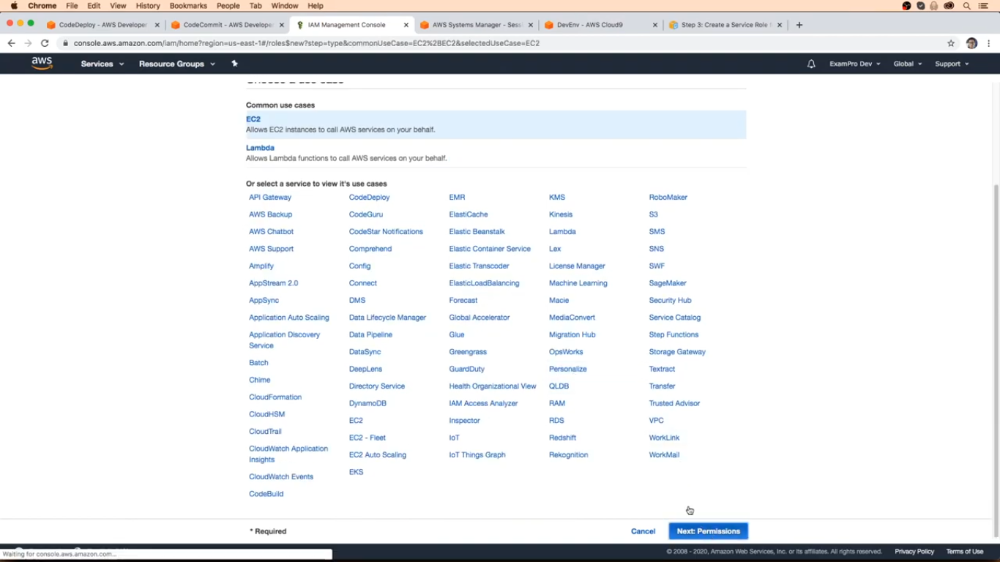
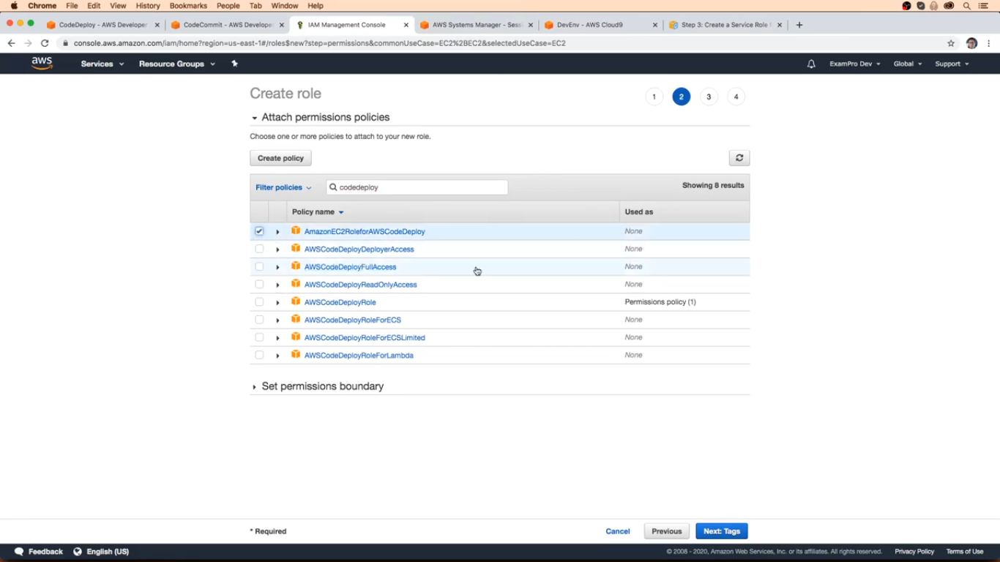 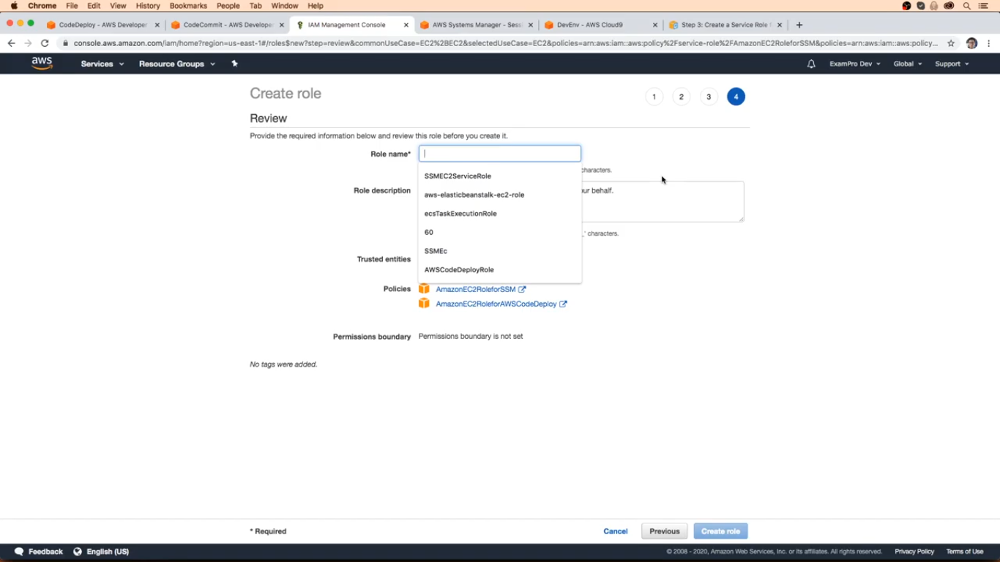
BACKLOG Test Deployment with s3
NOTE: This part Create Deployment is not part of codepipeline just to check if CodeDeloy is working with s3 or not.
To test the deployment we need to specify the appsec.yml with out codecommit but from s3 bucket in zip Create Deployment 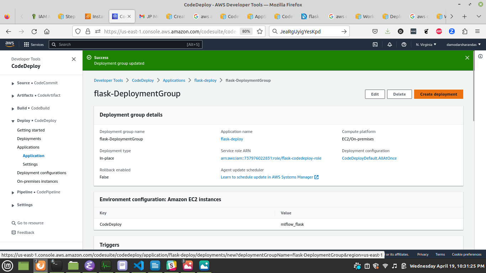
Give Select the DeploymentGroup which we have created
For Revison type we need to create s3 bucket and upload zip file
zip should consist of (appspec.yaml, bash script(start and stop docker ))
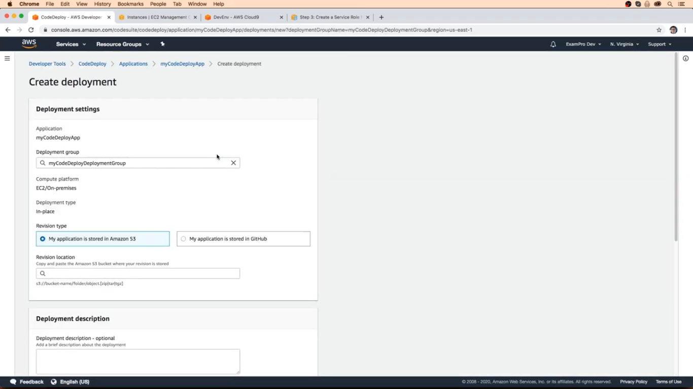
git clone ssh://git-codecommit.us-east-1.amazonaws.com/v1/repos/flask-pipeline cd flask-pipeline tree # python-flask-docker-image # ├── app.ini # ├── app.py # ├── buildspec.yml # ├── code-deploy-code # │ ├── appspec.yml # │ ├── flask-deploy.zip # │ ├── kill_container.sh # │ ├── load_image.sh # │ └── start_container.sh # ├── docker-compose.yaml # ├── Dockerfile-chatbot # ├── Dockerfile-ecs # ├── Dockerfile-runflask # ├── nginx # │ ├── chatbot.conf # │ ├── default.conf # │ ├── gunicorn.conf # │ ├── gunicorn.config.py # │ └── supervisord.conf # ├── __pycache__ # │ └── app.cpython-39.pyc # ├── ReadMe.html # ├── Readme.md # ├── ReadMe.org # ├── ReadMe.org~ # └── requirements.txt rm flask-deploy.zip zip flask-deploy.zip appspec.yml script/*.sh # Create s3 bucket to upload flask-deploy.zip # One Time creation aws s3api create-bucket --bucket flask-deploy-bucket --region us-east-1 aws s3 cp flask-deploy.zip s3://flask-deploy-bucket/flask-deploy.zip
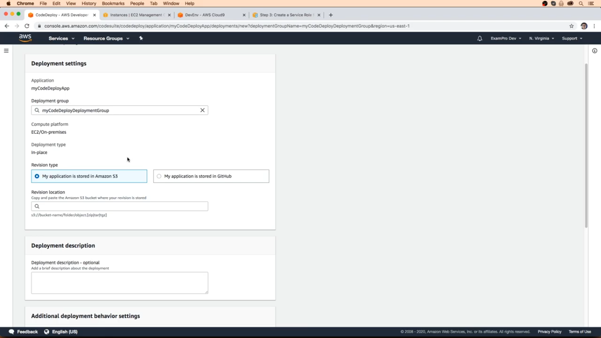
Install codedeploy agend in ubuntu ec2 instance
https://www.youtube.com/watch?v=I1-gfH9u1jw
source :https://docs.aws.amazon.com/codedeploy/latest/userguide/codedeploy-agent-operations-install-ubuntu.html
https://mabdullahabid.medium.com/install-codedeploy-agent-for-ubuntu-server-6e87db526dba
https://stackoverflow.com/questions/64243923/how-to-codedeploy-appspec-yml-runas-ubuntu-user
sudo apt update sudo apt install ruby-full wget cd /home/ubunut/codedeploy-agent wget https://aws-codedeploy-us-east-1.s3.us-east-1.amazonaws.com/latest/install # get your region code deploy agent for below site # https://docs.aws.amazon.com/codedeploy/latest/userguide/resource-kit.html#resource-kit-bucket-names chmod +x ./install sudo ./install auto sudo service codedeploy-agent start sudo service codedeploy-agent status
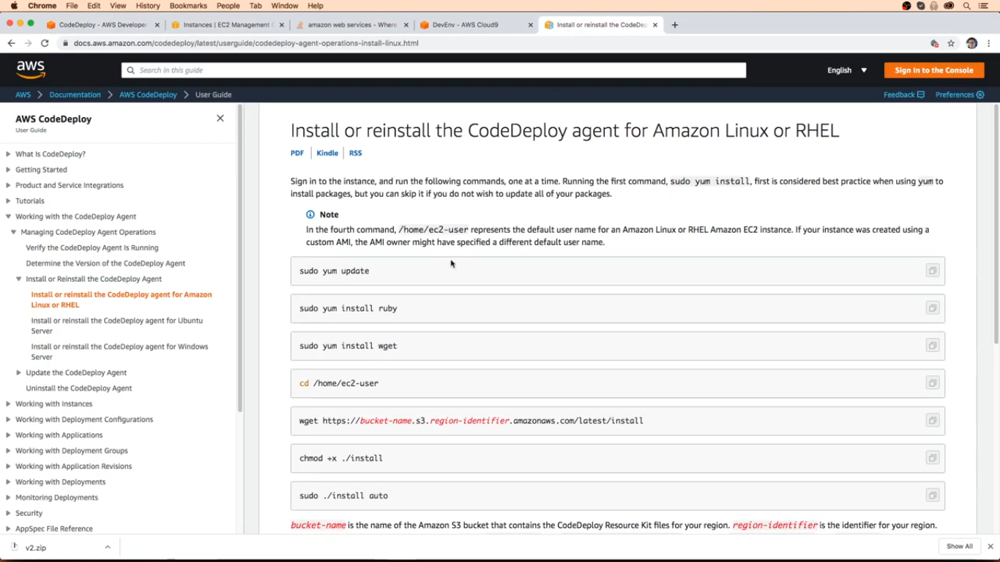 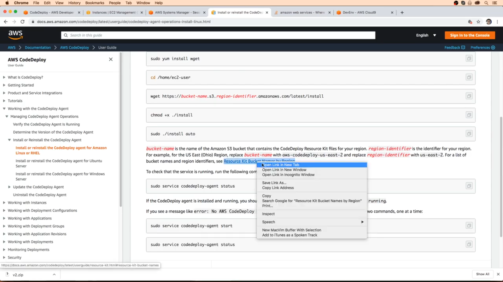 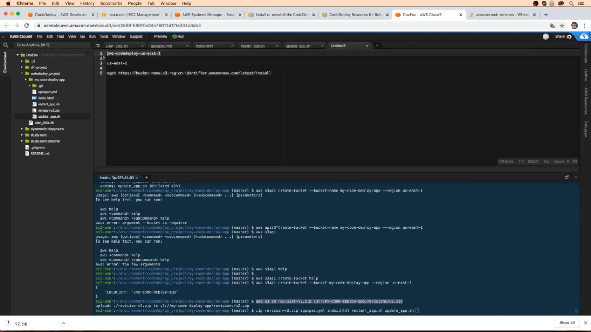 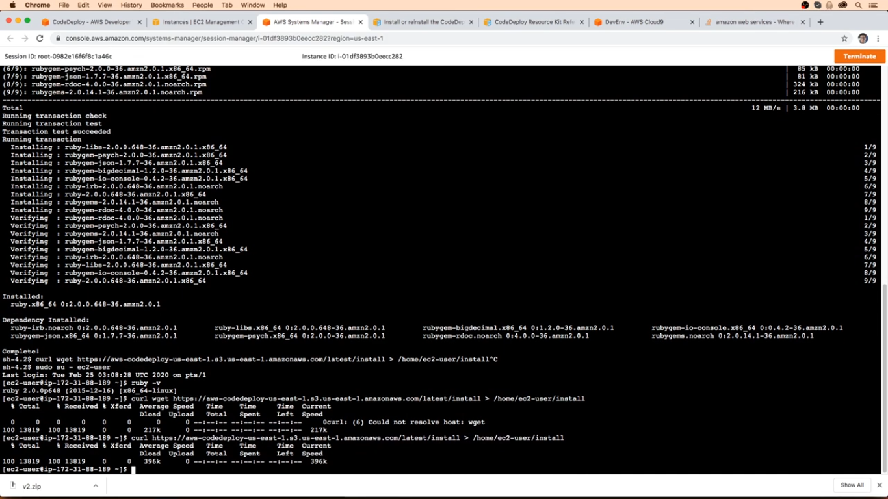
appspec.yml
Default appspec.yml format
version: 0.0
os: linux
files:
- source: /
destination: /var/www/html/
overwrite: true
hooks:
BeforeInstall:
- location: scripts/before_install.sh
timeout: 300
runas: root
AfterInstall:
- location: scripts/setup_environment.sh
timeout: 300
runas: root
- location: scripts/after_install.sh
timeout: 900
runas: root
ApplicationStart:
- location: scripts/start_server.sh
timeout: 300
ApplicationStop:
- location: scripts/stop_server.sh
timeout: 300
ValidateService:
- location: scripts/validate_service.sh
timeout: 300
Our appspec.yml file
version: 0.0
os: linux
hooks:
ApplicationStop:
- location: script/kill_container.sh
timeout: 20
runas: root
BeforeInstall:
- location: script/dummy.sh
Install:
- location: script/dummy.sh
AfterInstall:
- location: script/load_image.sh
timeout: 40
runas: root
ApplicationStart:
- location: script/start_container.sh
timeout: 10
runas: root
ValidateService:
- location: script/dummy.sh
bash script in appspec is
# kill_container.sh docker rm --force $(docker ps -a -q) # docker rmi --force $(docker images -q) # load_image.sh aws ecr get-login-password --region us-east-1 | docker login --username AWS --password-stdin 737976022831.dkr.ecr.us-east-1.amazonaws.com docker pull 737976022831.dkr.ecr.us-east-1.amazonaws.com/flask_dimage:latest docker tag 737976022831.dkr.ecr.us-east-1.amazonaws.com/flask_dimage:latest flask_dimage:latest # start_container.sh docker run -itd -p 80:80 --name flask_cname flask_dimage:latest
Run Code Deploy check if it is working
Create Code Pipeline